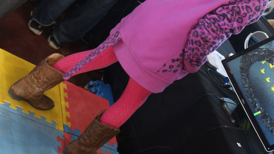

MINIW (Mini NIW)

MINIW (Mini NIW: Natural Interactive Walking) is a 2x2 haptic tile platform for gaming. We developed Magic Tiles to demonstrate different haptic textures and a Duck Game to explore an application of the system.
Magic Tiles: By swapping interlocking foam tiles with different colors, haptic texture changes accordingly. There are red, blue, light blue and yellow, and they are crushing can, water, ice and sand textures, respectively. By actively swapping the tiles, participants are expected to recognize the change in haptic feedback.
Links
Natural Interactive Walking: http://srl.mcgill.ca/projects/niw/
Maker Faire Ottawa 2015: http://makerfaireottawa.com
TEDxMontréal 2015: http://tedxmontreal.com